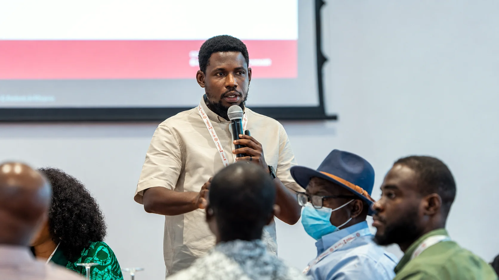
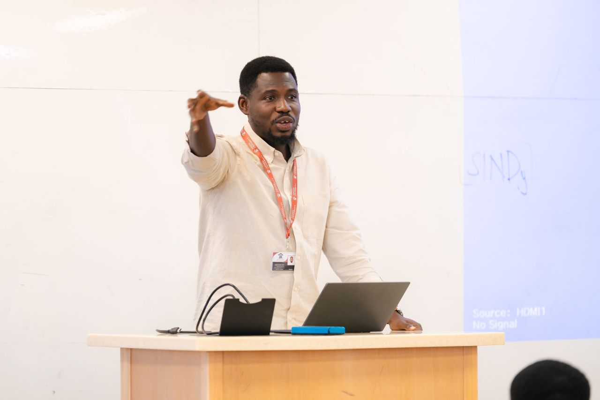
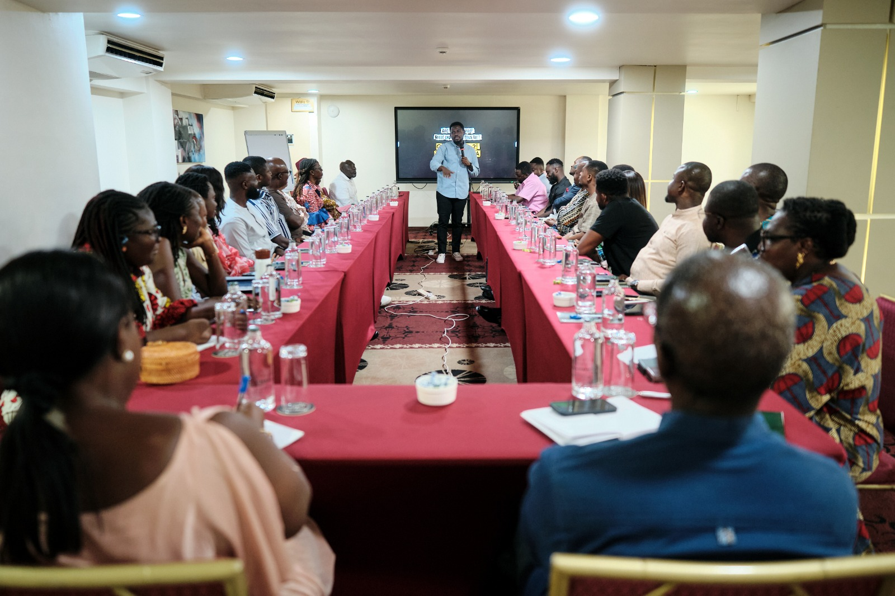
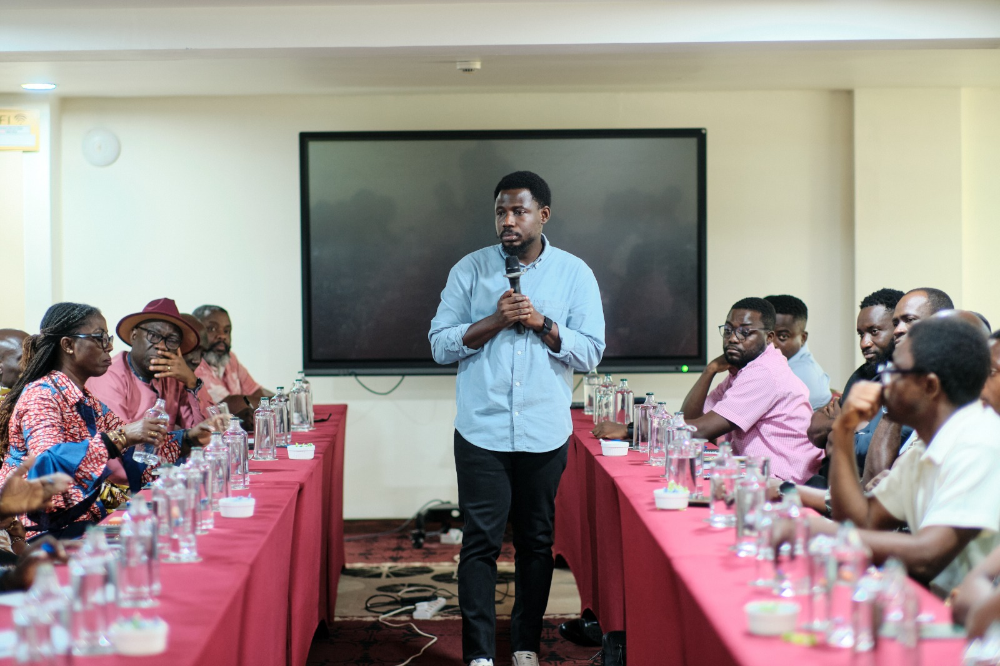
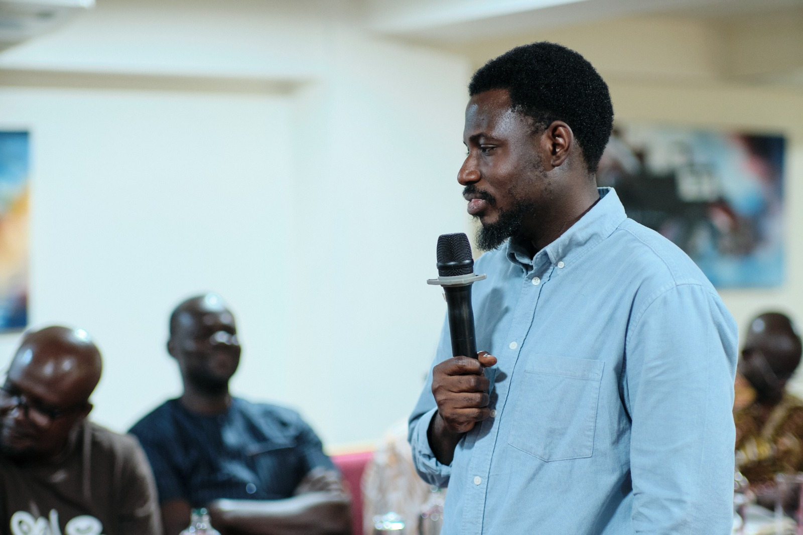
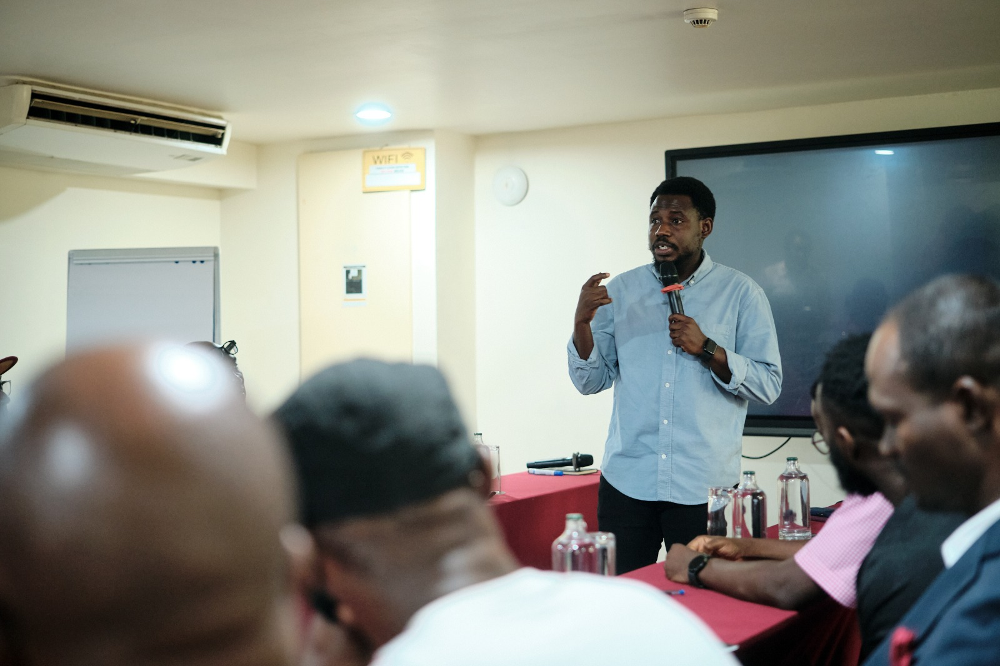
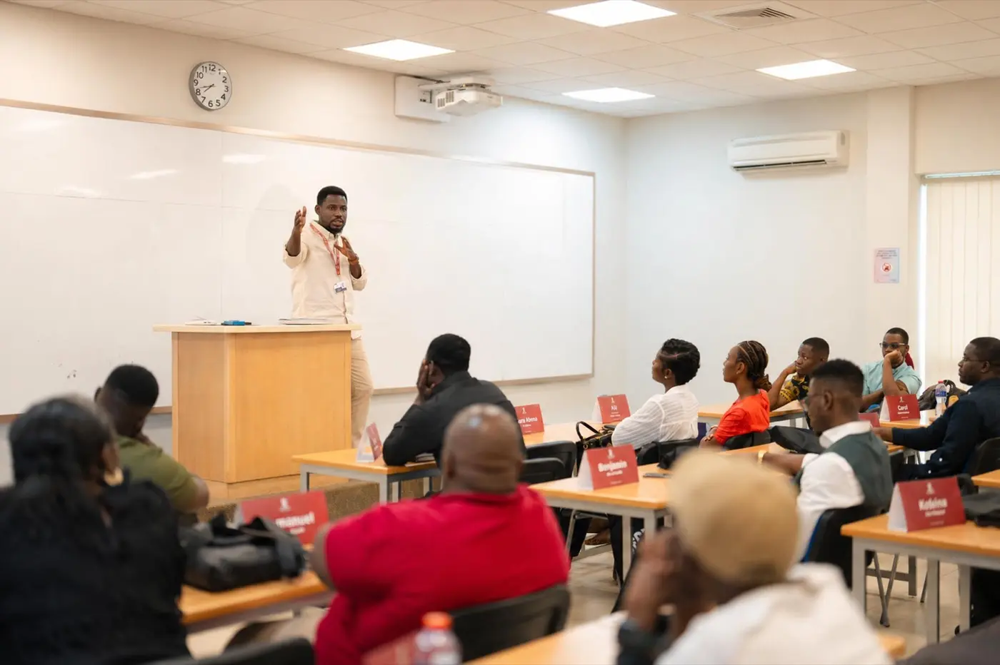

Supply Chain & Operations Strategy
Value chain analysis, network design, resilience and performance improvement for manufacturing, agri-food, retail and healthcare operations.
Ashesi University · Berekuso, Ghana
Associate Professor, Head of the Business Administration Department and Director of the MBA Programme at Ashesi University. I help organisations across Africa build sustainable, resilient operations, grounded in research and proven in practice.
About
I began in pure numbers, with a BSc in Mathematics and an MPhil in Applied Mathematics at KNUST, before discovering that the most interesting equations sit inside organisations: how goods move, how firms grow responsibly, and how Africa's supply chains can compete globally without costing the planet.
A PhD in Operations and Supply Chain Management at the University of the Witwatersrand sharpened that focus. Today I lead the Business Administration Department and the MBA Programme at Ashesi University, publish in leading Q1 journals on circular economy and sustainable operations, and advise governments, embassies, and enterprises on strategy, value chains, and evaluation.
My conviction is simple: rigorous research should leave the library. Every consulting engagement I take is grounded in evidence; every paper I write is aimed at real-world impact across Africa.

Strategic leadership of the Business Administration Department & MBA Programme.
Q1 research pipeline; new Supply Chain Management curriculum (+20% enrolment).
Postgraduate teaching, executive training & satellite campus coordination.
Operations & Supply Chain Management, funded by the Bradlow Foundation Scholarship.
Executive training portfolio; +30% enrolment across five online programmes.
Campus operations, accreditation & international collaborations.
Operations, service operations & supply chain management.
Taught optimisation, engineering mathematics & mathematical methods.
Consultancy
I work with governments, development partners, universities and enterprises on operations, sustainability and evaluation challenges, bringing the same analytical rigour that earns Q1 journal publications to every engagement.
Value chain analysis, network design, resilience and performance improvement for manufacturing, agri-food, retail and healthcare operations.
Circular economy roadmaps, NetZero transition support, triple-bottom-line decision frameworks and corporate sustainability performance.
Theory-of-change design, indicator frameworks, robustness testing and impact evaluation for programmes and multi-million-dollar initiatives.
Advanced quantitative methods (PLS-SEM, fsQCA, DEMATEL, MCDM), plus survey design, data collection at scale and policy-grade analysis.
Design and delivery of executive education, accreditation support and curriculum development for universities and corporate academies.
Tell me about your organisation and what you're trying to achieve.
Book a consultationAshesi E-Learning Initiative · Ghana
Evaluated the effectiveness of Ashesi University's e-learning programmes using advanced analytical techniques, informing institutional digital-learning strategy.
Education Collaborative · Entrepreneurship Ecosystem Project
Led data analysis and authored 4+ technical reports, transforming complex findings into actionable insights and guiding two manuscript developments.
FSPI-R Project · French Embassy & Ashesi University
Directed data collection across 300+ healthcare facilities on French-language adoption in Ghana's health sector; analysis shaped five policy developments.
EU West Africa Competitiveness Programme · GIMPA
Advised on cassava, processed fruits, cosmetics and personal-care value chains: strategic interventions that improved production efficiency and market access.
Ashesi Berekuso Impact Study · Ghana
Applied advanced statistical robustness testing to guarantee the reliability and validity of a flagship community-impact study.
Academy of Leadership & Executive Training · GIMPA
Directed executive programmes engaging 50+ stakeholders; developed five online offerings that lifted enrolment by 30%.
Engagements typically begin with a scoping conversation, with no obligation.
Start a conversation →Research & Publications
Research on sustainable supply chains, circular economy and operations, in journals including Business Strategy and the Environment (IF 13.3), Resources Policy (IF 12.4) and Benchmarking (IF 5.6).
No publications match your search.
Plus 7 teaching cases under review on African business strategy, supply chains and entrepreneurship.
Speaking & Workshops
From POMS conferences in the US to executive workshops in Accra: engaging leaders, practitioners and policymakers on operations, data and sustainable business.





Teaching & Mentorship

Testimonials
"Disraeli combines academic depth with a consultant's instinct for what actually moves the needle. His evaluation of our programme gave us evidence we could act on immediately."
"His value chain analysis was the most rigorous piece of work our programme commissioned, and the most readable. Boards understood it, and field teams could execute it."
"As a supervisor and teacher, Dr. Asante-Darko holds you to top-quartile-journal standards while making you believe you can reach them. He changed the trajectory of my career."
"He explains supply chains the way practitioners live them, then examines you like a journal editor. The most demanding and most rewarding course of my MBA."
"We brought him in for the analytics, but the real value was how he translated the numbers into decisions our operations team could act on the following week."
"On our panel he made data-driven HR feel practical instead of theoretical. Delegates were still quoting his framework two days later."
Contact
For consultancy engagements, speaking invitations, research collaboration or media enquiries.